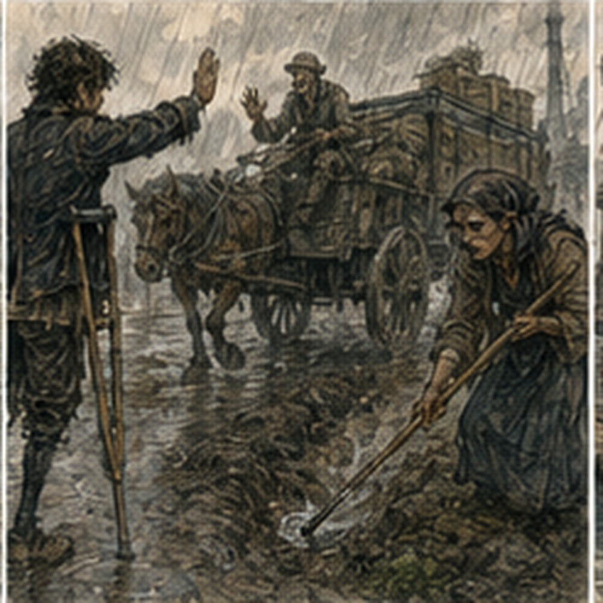
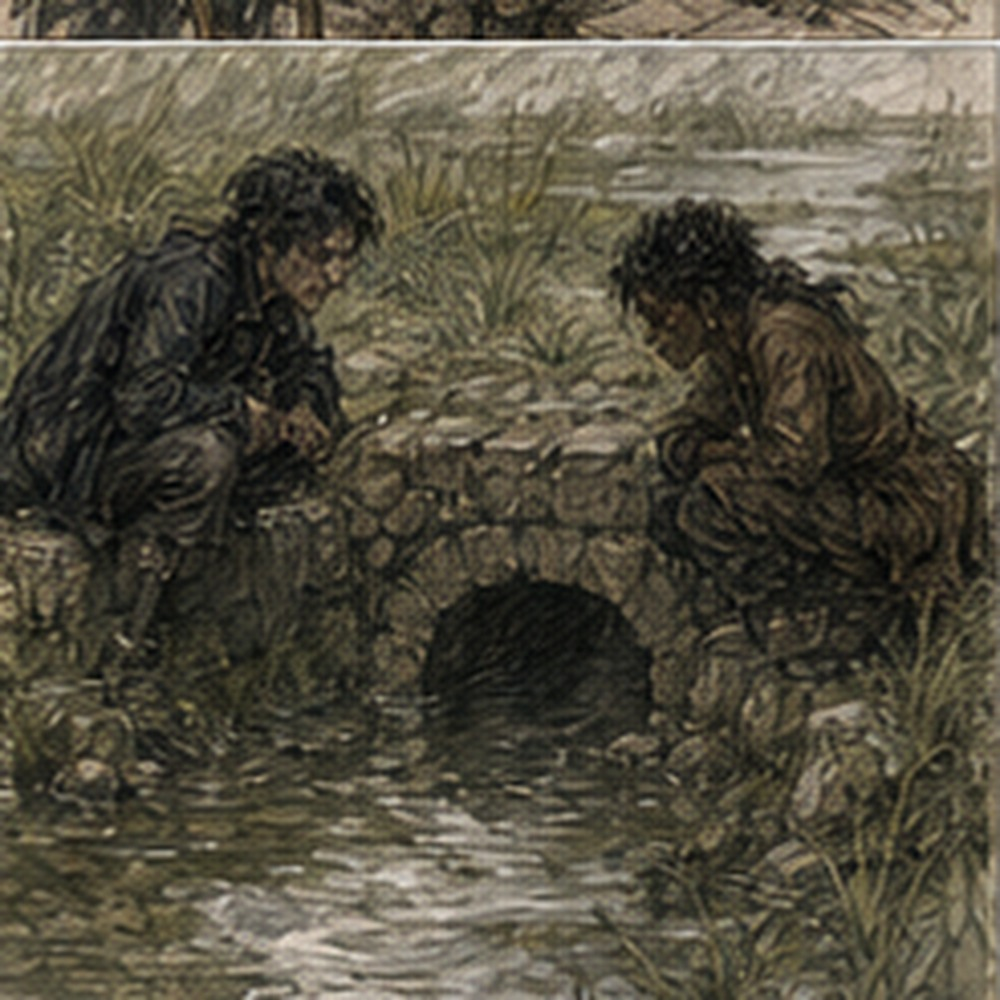

It rained enough to make Pessa change the route. Not enough to make the rain interesting. Carrow woke wet. Roofs dripped. Gutters ran. The street outside my lodging had three puddles and one man blaming the city for all of them. By first bell, the rain had stopped.
I ate bread standing up, put on the new gloves, and checked the calendar because apparently I was a person who did that now.
ROAD DAY TWO.
Third evening bell: Sevren. Maybe Jorren. Maybe Octavia. Tomorrow morning: Hessa. Good. I left. Pessa was already at the south-west gate. Dorn was tightening a strap on the wagon. The seventh-turn squeak remained. I did not count. This took effort. Pessa looked at the sky.
“Change.”
“Seep first.”
“Yes.”
Dorn climbed onto the wagon.
“Then west?”
“If the shoulder held.”
Good. No exposition. We knew. I put my bag in back. Pessa drove. The road outside Carrow was darker than yesterday. Not flooded. Not soft everywhere. Just wet enough that wheel tracks showed clearly and water occupied places it had ignored the day before. Useful.
The first farm complaint from yesterday looked almost exactly the same. The red-faced farmer was not waiting. Excellent. Water moved through the culvert. The small shoulder wash had grown maybe half an inch. Maybe. Pessa looked once.
“Blue stays.”
We moved. The old drainage cut did not look the same. Yesterday, water had appeared from beneath grass in a narrow seep. Today, it ran. Not fast. Enough to make a visible thread down the ditch. Pessa stopped twenty yards before it. Dorn got down with the probe. I took the board. No one told me. Good. Yesterday's red mark remained on the roadside stone.
The wheel track was still clear. The wet shoulder was wider. Dorn probed from firm ground inward.
“Same cover here.”
Another point.
“Less.”
“How much?” Pessa asked.
“Four inches.”
Yesterday six to eight. I wrote. Pessa walked uphill along the buried line. I watched water. The visible flow pulsed. Not rhythmically. More, less, more.
“Source changing?” I asked.
Pessa looked back.
“Maybe.”
I followed the line uphill with my eyes. Field runoff? No obvious channel. Rain infiltration through the old drain? Probably. The old stones beneath the shoulder carried water toward the ditch. Yesterday's model still fit. Mostly. Dorn pushed the probe near the outer edge. It sank deeper than before. He pulled it out. Mud coated the lower half.
“Don't put the wagon here.”

Pessa said, “Wasn't planning to.” A farm cart approached from behind us. Empty. I stepped into the road and raised a hand. Driver stopped. No argument.
“Inspection.”
He nodded. Pessa looked at the shoulder. Then at the cart.
“Let him through center.”
I moved our wagon farther ahead with Dorn. Not me driving. Dorn. Correct. The cart passed on the firm center. Nothing happened. Pessa crouched near the wet edge.
“Priority changes,” Pessa said.
“Red already,” I said.
“Red can become different red,” she said.
Annoying.
“What changes?”
“Crew size. Material. Whether they need traffic control.”
I wrote that down. She saw.
“Not all of it.”
I crossed out traffic control. She shook her head. I put it back. Dorn laughed. Pessa said, “Mark: active water, shoulder cover reduced after overnight rain, keep loaded wheels center until repair.”
“Temporary restriction?”
“Yes.”
“Closure?”
“No.”
“Who tells farms?”
“Guild notice.”
Good. Bounded. We marked it. No repair. Moved. The paired culvert from yesterday had changed more. One opening still flowed. The buried opening still did not. But water now stood upstream in a broad shallow pool where yesterday there had been only damp ground. Not over road. Yet. Dorn whistled. Pessa said nothing. We walked. The working culvert carried hard. Brown water.
Leaves. Small sticks. Not clogged. The approach settlement looked the same. I checked yesterday's note. One drain doing both drains' work. More rain gives remaining opening more water. Correct. I liked that. Too quickly. Pessa said, “What do you think?”
“Red remains. Maybe crew sooner.”
“Why?”
“Upstream storage increased. Working opening carrying full flow. Buried opening still inactive. If working one restricts, water reaches road.”
She nodded.
“Anything else?”
I looked. No. Dorn was not looking at the culvert. He was looking at the wagon tracks through the approach.
“What?” I asked.
He pointed. Yesterday's tracks crossed center. Fresh tracks did too. One set heavier. Deep. The right wheel rut dipped slightly before the culvert.
“Settlement moved?” I asked.
Dorn put the probe into the rut. Firm. Again six inches away. Soft. Again. Softer. Pessa came over. Dorn said, “Not just over the dry pipe.” I looked. The soft area extended toward the working culvert. That did not fit as neatly.
“Water spreading under the approach?”
“Maybe,” Pessa said.
“From the buried culvert?”
“Maybe.”
“From the working one?”
“Maybe.”
Annoying. I walked downstream. No obvious leak. No washout. No muddy discharge from the approach face. The working culvert outlet ran clean enough for brown rainwater. I came back.
“Could be saturated fill from above.”
Pessa nodded.
“Could.”
Dorn said, “Could be old patch.” I looked at him.
“What?” I asked.
He scraped the road surface with his boot. Different gravel beneath the top layer. Finer. Darker. A repair. Not on our map.
“How old?”
Dorn shrugged.
“Not new.”
Pessa crouched.
“Farm repair.”
“Allowed?”
“Approach belongs partly to farm.”
There. Another version of the road. Not Guild map. Not complaint. Not water. Somebody had filled something before.
“Does that change priority?” I asked.
“Yes.”
“How?”
“We don't tell a crew to clear the buried culvert until they know what was repaired and why.”
I stopped. Yesterday, clearing the mouth had looked like the obvious repair. We had not done it because inspection scope prevented us. Today, that restraint had become information. Maybe the buried culvert was buried accidentally. Maybe deliberately. Maybe because it failed. Maybe because somebody had filled settlement above it. We did not know.
“Can we ask the farm?”
Pessa said, “Yes.” The farmhouse sat two hundred yards away. A man came out before we reached it. Not the owner from yesterday. Younger. Mud on boots. He knew exactly what Pessa meant.
“Grandfather filled that side,” the younger man said.
“Why?” Pessa asked.
“Collapsed under a grain wagon.”
“When?” she asked.
“Three years?” the man said.
“Pipe broken?”
“Stone dropped. He packed it.”
“Guild?”
The man looked embarrassed.
“No.”
Of course.
“Why wasn't it reported?”
“Road still worked.”
It had. For three years. Until maybe now. Pessa asked more. No one died. No conspiracy. Grandfather had fixed a farm approach badly enough to keep using it and well enough that nobody cared. That was most infrastructure. Back at the road, Pessa changed the mark. Not repair soon. Inspection by road crew before repair. Different red.
I wrote:
BURIED CULVERT INTENTIONALLY FILLED AFTER PARTIAL COLLAPSE ~3 YRS AGO
UNRECORDED FARM REPAIR
DO NOT CLEAR WITHOUT OPENING / ASSESSING STRUCTURE
ACTIVE CULVERT CARRYING FULL FLOW
FILL SATURATED AFTER RAIN
LIMIT LOADED TRAFFIC TO CENTER UNTIL CREW
Pessa read it.
“Good.”
This time I accepted it. Mostly. We sent the farm notice with the younger man. Then continued west. The farther road was less used. Narrower. Fields farther apart. Drainage cuts crossed under the road in stone boxes or simple pipes depending on who had built what and when. One was perfect. One had weeds.
One had been rebuilt recently and still had fresh tool marks. One existed on the map and not in the road. I stood where it should have been. Nothing.
“No culvert,” I said.
Pessa looked at the map.
“Old line.”
“Removed?”
“Probably.”
Dorn walked downhill.
“Here.”
Twenty feet south, a newer pipe crossed. Not on map. I looked between them.
“Road shifted?”
Pessa nodded.
“Widened on east side. Drain moved.”
“When?”
“Before my time.”
The map had not caught up. I wrote less now.
OLD MAP LINE OBSOLETE
ACTIVE CROSSING 20 FT SOUTH
FUNCTIONAL
Pessa did not edit it. Victory. At the second farm spur, a woman wanted us to inspect a barn threshold. We did not. At the third, a boy asked whether Dorn's probe was a spear. Dorn said yes. Pessa said no. The boy believed Dorn. Consequences unknown.
Near noon we reached a long downhill section where the outer shoulder had washed in three shallow scallops. Visible. Ugly. Passable. Pessa stopped.
“Walk.”
We did. Dorn probed. I compared map notes. Last season: OUTER EDGE SOFT AFTER HEAVY RAIN. Current: three erosion pockets. Wheel track still two feet inside.
“Blue?” I asked.
Pessa said, “What do you think?”
“Blue if stable. Red if moving fast.”
“How do you know?”
I looked uphill. Water marks. Each scallop had a narrow runnel feeding it from the road crown. Not much. Fresh gravel at the edges. Recent. Overnight rain had moved some material.
“Changed last night.”
“Yes.”
“Red?”
“No.”
I frowned.
“Why?”
“Traffic.”
“What about it?”
“How much?”
I looked at tracks. Few. Mostly light. One wagon. Maybe two.
“Low.”
“Consequence?”
“Shoulder loss eventually.”
“Today?”
“Low.”
“Change?”
“Moderate.”
“Blue.”
There. I had weighted change too heavily. Reasonably. Pessa corrected.
“Unless more rain.”
“Yes.”
“Then?”
“Recheck.”
“Good.”
Dorn said, “Drink.” We ate lunch under a tree. The ground was damp. I sat on my bag. Pessa ate bread and dried fruit. Dorn had eggs again.
“How many eggs do you own?”
“Enough.”
“That is not a number.”
He looked at me.
“Hessa?”

I hated him. Pessa laughed. We ate. I flexed my hand. Fine. No magic yet. No need. My legs were more tired from walking than yesterday. Good tired. Normal. I drank. Pessa looked west.
“We can finish the upper loop by midafternoon.”
“Then?”
“Back.”
“That's all?”
“That's the job.”
Right. Two days. Then done. I had expected something else. Not danger. More. Because stories liked escalation. Roads did not care about narrative. Apparently jobs didn't either. Good. Before the upper loop, I was wrong about a culvert. Not spectacularly. Enough.
The crossing sat below a pasture where the ditch widened into a shallow green pool. Water stood almost to the culvert mouth. The downstream side ran clear. I looked at the upstream pool.
“Restriction.”
Pessa said, “Where?”
“Water backed at inlet.”
“Is it?”
I stopped. Water near an inlet looked like backed water. That was not the same thing. Dorn put the probe into the pool edge. Shallow. Then deeper. The pasture itself dipped toward the road.
Pessa walked twenty yards along the fence and pointed to a second line of wet grass entering from the field.
“Pond overflow,” she said.
“Farm pond?”
“Seasonal.”
I checked the map. Nothing. Of course. The culvert mouth was half underwater because the designed upstream collection area was full, not because the pipe was half blocked. I crouched. Flow through the pipe was steady. No debris. No pressure boil. No unusual downstream scour.
“Functional,” I said.
“Yes.”
“White?”
“No mark.”
I looked at her.
“Why?”
“What would you tell a crew?”
“Nothing.”
“Then don't create work because water looks dramatic.”
That hurt. Reasonably. I crossed out the note I had started. Dorn said, “You can keep it for your memoir.”
“I will kill you with your probe.”
“Not repair work.”
Pessa laughed. We moved on. The mistake bothered me for perhaps six minutes. Then less. My inference had been reasonable. It had also been wrong because I had treated water level as evidence of restriction without checking the grade that produced the water level. Useful. Not universal. I did not write a principle. This required restraint. Then we finished the upper loop.
One blocked ditch. White. One cracked culvert headwall. Blue. A farm gate opening directly into a wheel rut. Not our problem. A section of road with loose stone after somebody had dragged logs. Pessa marked blue.
Dorn found a broken iron strap in the ditch and kept it.
“Why?”
“Iron.”
Strong. On the return, we reached the long downhill wash again. A loaded cart was coming up. Two horses. Barrels. Not huge. Heavy enough. The driver saw us and kept center. Good. Then another cart appeared behind him. Empty. Faster. The road was wide enough to pass in most places. Not beside the washed shoulder. I saw it. Pessa saw it. We were off the road already.
The empty driver started moving out to pass. I stepped forward. Red paddle? No paddle. Wrong job. I raised both arms.
“Hold.”
The empty driver slowed. Not stopped.
“Hold!”
He stopped. The loaded cart continued uphill. Driver looked annoyed.
“Room.”
“Not at the shoulder.”
He looked. Saw the wash. Maybe. Pessa called, “Wait for the barrels.” Authority. He waited. Loaded cart passed us. The road under its left rear wheel compressed slightly. Not failure. Mud. The driver kept center. Good. When clear, Pessa waved the empty cart through. Nothing happened. The driver said something rude. Dorn said something ruder. Road work. We continued.
At the old seep, a Guild marker wagon was already there. Not repair crew. Marker. Two workers placing temporary stakes along the soft edge. Fast. System responding. One waved at Pessa.
“Got notice.”
She nodded. That was it. Our morning observation had already become somebody else's afternoon task. I liked that. Not because I had caused it. Because it continued without me. We passed. At the paired culvert, nobody had arrived yet. Fine. Different priority. Different crew. Not everything immediate.
By the time Carrow came into view, the clouds had broken. Sunlight hit wet fields. Everything looked cleaner than it was. Pessa drove. Dorn held the iron strap he had found like treasure. I sat in back with the board. Two days of notes. Mud on boots. New gloves no longer new. One small scratch across the left palm leather. Good. The wheel squeaked.
I counted accidentally. Seven. Fuck. At the south-west gate, Pessa stopped.
“Guild first.”
We went. The clerk took our packet. Pessa gave the summary. Not me. Red seep. Paired culvert with unrecorded collapsed side and farm fill. Blue shoulder erosion. Routine marks. Temporary loaded-wheel center guidance at two locations until crews assessed. The clerk asked questions. Pessa answered. Dorn added the hidden repair fill. I added one detail when Pessa looked at me. Only one.
The clerk wrote. Then she said, “Need either of you tomorrow?” Pessa said, “No.” Done. Just like that. The job did not become a career. Dorn signed. I signed. Pessa signed last. Payment. Two-day amount. I counted.
Then stopped myself from doing the full economy model in the doorway. Pessa looked at me.
“What?”
“Nothing.”
“You did good.”
There it was again.
“Thank you.”
No joke. She noticed that too.
“Careful.”
“About?”
“Getting normal.”
“Impossible.”
Dorn said, “Drinks?” I looked at the light. Third evening bell later.
“Already have plans.”
Dorn's eyebrows went up. Pessa's did too. I hated this.
“What?”
“Nothing,” Pessa said.
“Everyone stop.”
Dorn grinned. We split at the Guild steps. Pessa went toward the road office. Dorn toward the market. I went home. The room was still mine. Another week. I unpacked. Road bag empty. Dirty socks. Food gone except one piece of cheese. Inspection copy folded. I took the calendar down. Crossed out ROAD DAY TWO.
Then wrote:
DRINKS, THIRD EVENING BELL.
Already there. I had written it before. Good.
Tomorrow:
HESSA MORNING.
Still there. Alden next week. West Storehouse. Still there. The road job had happened in the middle of my life instead of replacing it. That felt strange. I washed. Changed shirt. Cleaned mud from my boots. The repaired eyelet held. The gloves needed drying. I set them near the window. Not too close. Leather. I knew that much. Then I went to meet Sevren.
He was late. Of course. Third evening bell passed. Then another ten minutes. I sat outside the drink shop with a cup I had not started because apparently I had standards now. Jorren arrived first.
“You look disappointed.”
“Sevren is late.”
“Sevren?”
“Yes.”
“You invited him?”
“Yes.”
Jorren sat.
“This is serious.”
“Shut up.”
“Where's Octavia?”
“I don't know.”
“You invited her?”
“Through Sevren.”
“Bad system.”
“I know.”
Sevren appeared five minutes later with Octavia. So did someone I did not know. A woman in a courier coat. Sevren raised both hands.
“Not late.”
“You are.”
“I brought more people. Time adjusts.”
“That is not how time works.”
Octavia said, “I've tried.” The courier woman looked at me.
“Greg?”
“Yes.”
“Lyssa.”
Good. A new name. Terrible. We found a larger table. Jorren complained. Sevren ordered food. Octavia asked about the road. Not investigation. Not future.
“How muddy?”
“Moderate.”
“Any broken wagons?”
“No.”
“Pigs?”
“No.”
Sevren looked disappointed. I told them about Dorn convincing a child the probe was a spear. That was apparently the correct story. Jorren told a worse one. Lyssa had spent the day carrying contracts north and had opinions about a bridge toll clerk. Octavia knew the clerk. Of course. People had lives. The drinks came. I drank. Not much. Enough. At some point Sevren asked, “Working tomorrow?”
“Hessa.”
“After?”
“I don't know.”
He nodded. No invitation. No task. Good. I leaned back. My body was tired. Road tired. Not hurt. My hands smelled faintly of wet leather despite washing. My boots were drying at home. Tomorrow Hessa would ask what magic I had used. One cast yesterday. None today. Easy report. Next week Alden would hit me with a padded sword. Then Antonius would get three hours of my morning.
Arlo might have solved his regulator. Or not. Edrin might know something. Or not. The south-west road would still be wet. A crew would inspect the collapsed culvert. Some farmer would complain about something we had not fixed. All of it continued. Sevren said something. I missed it.
“What?”
“I said you're doing the face.”
“What face?”
Octavia said, “The one where you leave.”
“I am sitting here.”
“Not physically.”
I looked at the table. Jorren. Sevren. Octavia. Lyssa. Food. Drink. Noise. Present.
“Sorry.”
Sevren pushed a plate toward me.
“Eat.”
I did. That solved it. For a while.